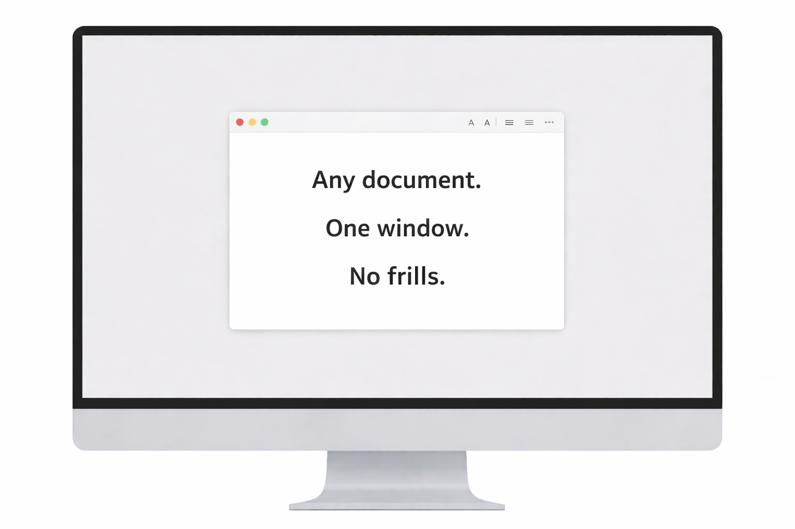

No Frills Focus
A digital minimalism environment for writers.

Simplicity as a tool.
No Frills Focus masks everything on your screen except what you’re writing. Everything else gets hidden from view.
Simple to use.
- Open whatever writing or screenwriting app you already use.
- Choose a session.
- Your work appears inside a single, fixed macOS window.
- Everything else fades behind a neutral backdrop.
- Works with the apps you already know and trust — it's even web browser-friendly.
- No third party workflows to learn.
- No file juggling or porting.
- No b.s.
A simplified environment that keeps you present.
When visual drift points disappear, your eyes stop scanning for exits, and your mind stops negotiating.
Time loosens its grip.
Attention steadies.
Longer writing sessions become second nature.
Work simply → simply work.
No Frills Focus isn’t about productivity hacks or enforcement. It simply makes the choice you’ve already made to write more deliberate.
No visible timer, no countdown anxiety, no score‑keeping — just the simplicity and calm of visual constraint keeping you focused.
Your time, your terms.
Exit your session at any time. Nothing is locked. Your screen returns to normal after each block.
- Cmd + Shift + X — Exit session
- Cmd + Shift + Z — Exit app
Your data is yours.
The app works entirely offline. Nothing on your desktop is moved, changed, or rearranged. No accounts. No subscriptions. Purchase once. Future updates included.
Get started.
Desktop experience recommended. Not intended for mobile use.
© 2026 No Frills Focus